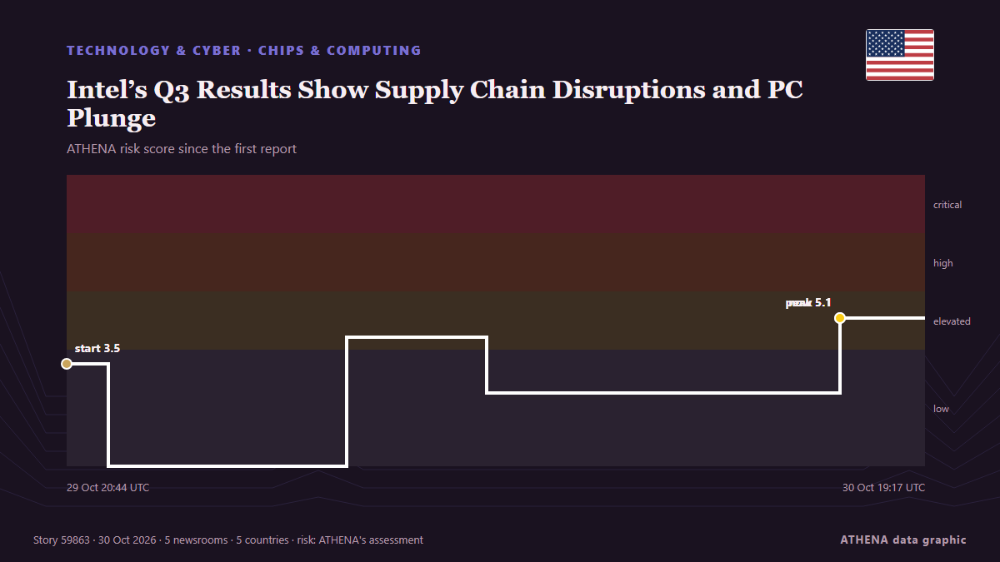

Chips y computación
| 17 oct | 0 |
|---|---|
| 18 oct | 0 |
| 19 oct | 0 |
| 20 oct | 0 |
| 21 oct | 0 |
| 22 oct | 1 |
| 23 oct | 1 |
| 24 oct | 0 |
| 25 oct | 1 |
| 26 oct | 3 |
| 27 oct | 5 |
| 28 oct | 2 |
| 29 oct | 6 |
| 30 oct | 1 |
Los titulares se muestran en inglés, tal como se publicaron.

Intel’s Q3 Results Show Supply Chain Disruptions and PC Plunge
Intel faces a tough challenge as manufacturing bottlenecks and rising memory costs impact PC sales despite strong data center growth. de EE Times
Leapmotor brings a new era of smart electric mobility to the market
China’s Leapmotor is making a bigger push into Europe, with a clear ambition to bring advanced electric-car technology within reach of more drivers, without the hefty price tag often associated with… de Cyprus Mail
Netherlands very dependent on China for critical raw materials
The Dutch economy is heavily dependent on essential raw materials that are primarily processed in China, according to research by. de NL Times
Oracle will sell Google’s TPUs in its cloud and put ChatGPT in its apps
Oracle will rent out Google’s tensor processing units (TPUs) in its cloud from 2027. de The Next Web
Nvidia to make $1 billion investment in Naver next week
Nvidia Corp. is scheduled to fulfill its $1 billion investment in Naver Corp. next Friday, according to the portal giant's regulatory filing Friday, a move set to make the U.S. chip giant the… de Korea Herald
Samsung posts record $80bn quarterly profit on AI memory demand
Samsung Electronics made a record operating profit of 107.4 trillion won (about $80bn) in the third quarter, the company said on Thursday. de The Next Web
DOJ looks into Nvidia’s $12.9B Hugging Face deal, Reuters reports
The US Justice Department is asking how Nvidia’s $12.9B purchase of Hugging Face would affect competition in AI, including whether it would hand Nvidia a key distribution point for models. de The Next Web
OpenAI plans to buy AI chips from Google: report
Replit moved most of its AI spending from Anthropic to OpenAI in recent months after OpenAI offered a discount of more than 30%, The Information reported on Saturday. de The Next Web
Failed $44b Firmus float probed by corporate watchdog
ASIC has confirmed it is investigating the aborted float of data centre start-up Firmus that would have been the largest ASX listing since Telstra in 1997. de Sydney Morning Herald
(2nd LD) SK hynix logs record profit in Q3 on AI chip supercycle
SEOUL, Oct. 28 (Yonhap) -- SK hynix Inc. said Wednesday its revenue and operatin... de Yonhap (English)
Nvidia, AMD to invest $4 billion in Meta as tech giants deepen AI partnership
Meta on Monday announced plans to raise a total of $95 billion to support its investments in artificial intelligence infrastructure. de CNBC World
KLIA Customs seizes RM49.5m in AI chips with potential military uses, fifth case in RM100m syndicate probe
SEPANG, Oct 28 — The Customs Department at Kuala Lumpur International Airport (KLIA) foiled an attempt to transit... de Malay Mail
AI chips worth US$12.1 million seized at Malaysia airport, customs authority says
KUWAIT CITY, Oct 26: Customs inspectors at Kuwait International Airport’s Terminal 5 (T5) seized 192 tablets of controlled medication after discovering them concealed inside boxes... de Arab Times
Apple unveils redesigned, thinner iPad mini with OLED display
Apple’s latest iPad mini introduces a much-improved OLED display, a water-resistant redesign, and the high-performance A20 Pro chip tailored for advanced on-device AI. de IOL
SpaceX locks in $40B GPU financing deal with Apollo
The financing gives SpaceX another way to fund its rapidly expanding AI ambitions without relying solely on traditional debt markets. de TechCrunch